The genesis of a piece of music is always problematical. The initial impulse to create that piece rather than another can come from many sources, and also from simultaneous sources. For me what starts my thoughts is usually a timbre, or a philosophical idea, or possibly even a melodic fragment. In a real sense Drums and Different Canons has all these elements -- a marimba sound, a chaotic melody, and a philosophical view of what makes music music.
At a more mundane level the first step was reading the paper [Bidlack 1992] and I programmed part of it to produce output to Csound, and borrowing a timbre from Risset, showed the results to a student. We were both taken with a short sequence of notes taken from this demonstration. It was a mapping of the Hénon difference equation simply onto pitch and duration. As I listened a number of times I became aware that the theme which had first caught my attention could be heard at other moments in this simple mapping, and from that a whole train of thoughts have arisen. The main one can be summarised as an interest in patterns that almost repeat, but never quite manage the same sequence. It was this which had struck me, and I started thinking why this should be. It would be over simplistic to trace these thoughts to the PhD thesis of Jeremy Leach [Leach, 1999], but we independently came to similar conclusions. Music is about repetitions, but if that was all we would get bored very soon. But if the repetition did not follow exactly the same pattern we would have our interest regained.
As to why this should be, this is not the place, but the reader is referred to the Leach thesis, and his other papers [Leach & Fitch 1995a, Leach 1995, Leach & Fitch 1995b, Leach 1996a, Leach 1996b], but the clue is in evolutionary theory.
Rather that follow that line of enquiry I return to the piece of music. To follow what I heard I needed to think about the general idea of non-exact repetitions. In mathematics one can model these by a cyclic motion, where each orbit does not join up exactly, or ergodic systems. As a young mathematician quite by chance I had worked on differential equations with similar features. A fellow student, now better known for his work on Unix, was developing solutions to the orbit of the Moon using the Hill—Brown formulation [Bourne 1972], and from him I learnt about the Hill equation;
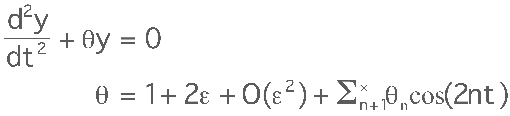
As it was difficult to explain to undergraduates when I came to lecture on the solution of such equations my concentration changed to the Duffing equation:
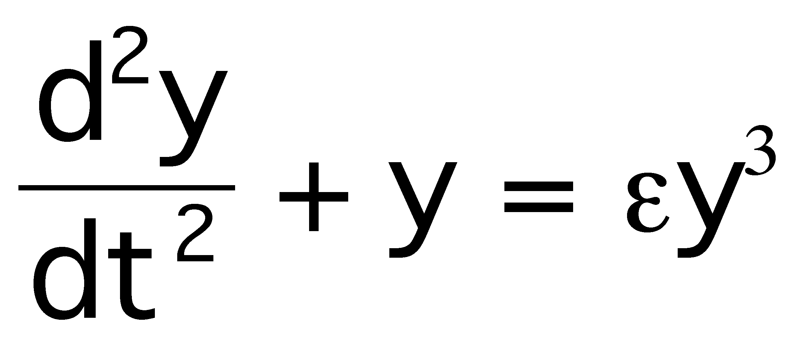
a solution of which as a power series in e and a Fourier series in time was required (see [Barton & Fitch 1972] for example).
In the case of Drums and Different Canons #1 the equation used is the Hénon equation [Hénon 1976 ] which is cast as a phase equation, in x and y with time as the independent variable:
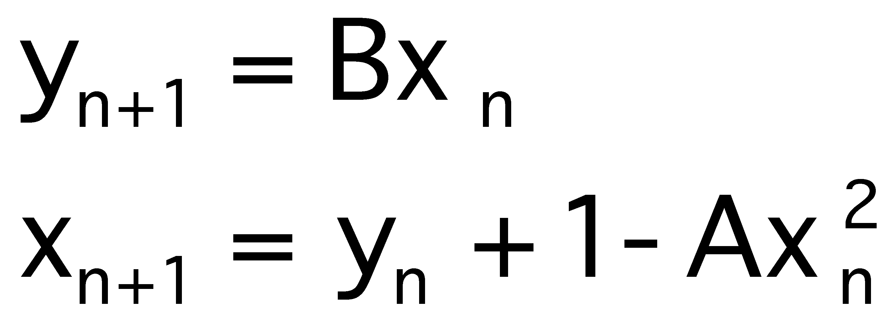
and it is this form which I used.
Of course the mathematical discussion above is not about music. The task of an algorithmic composer is to create algorithms, in my case based on beautiful mathematics, into sonic realisations. In the case of Drums and Different Canons #1 will describe in detail the composition of the first movement. This is the longest, and is subtitled Henon after the equation on which it is based. I had already decided on a marimba-like sound, because it is a timbre I admire, and the speed was basically slow, but was adjusted as my thoughts developed.
The Hénon map gives value of x and y for each iteration, so I mapped x onto pitch and |y| onto initiation time. The actual map was
pitch = 7.7 + 2.4 x
to give an octave and fraction. I worked to a hundredth of an octave in equal steps, but the intention was to avoid any particular scale. The duration was set arbitrarily at 500 events, a number which fortuitously ended at the 'right' place in the cycles.
This gives the backbone of the movement, but it was a little characterless to my ear. Two different methods were used to embroider this. The first was to add a rhythmic element, and the second was to add a second sound.
In a simple way I wanted the piece to be in 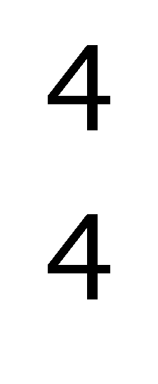 time, but of course the chaotic nature of the note onsets meant that this could not be achieved simply. The answer taken was to use amplitude increases for the first note after or on the beat, with increases of 1000, 200, 700 or 200 units for the four beats. This seems to create a hesitating beat.
A second timbral element was then added driven by the Hénon map. Whenever the pitch fell below a pitch of 5.0 in Csound's octave scheme, a sequence of events is triggered. Initially I conceived of this as a hi-hat sound, but during the composition this changed somewhat, although in the programs it is still referred to as a cymbal. The sequence was to take 7 events from the Torus map
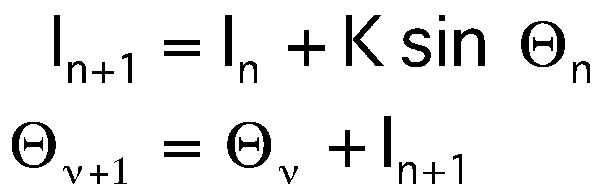
which both variables taken mod 2p , and K a constant. Again we have to map these two variables to musical parameters. To ensure greater variation, the value of K was taken as 1 + t/10000 where t is the time of the trigger. The pitch was 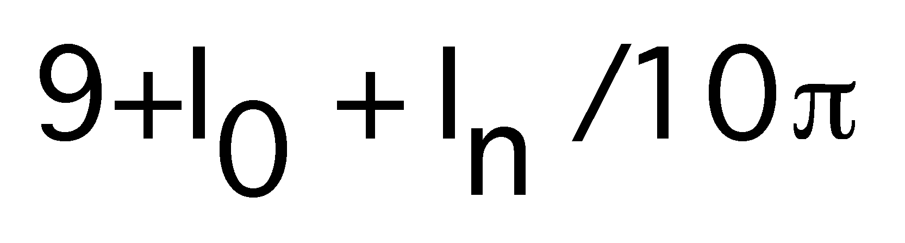 for the nth note and the speed of the gesture is controlled by Q with onsets of 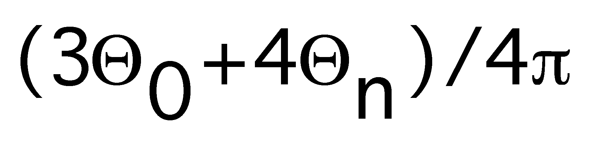. Additional digits from Q _nare used for timbral parameters. The instrument is Risset's finger cymbals.
All that remains in the design is to ensure that the program triggers the gesture at the start, and that the last event is marked by another timbre, again from Risset.
It should be emphasised that the
mappings above are all empirical, and represent the composer's
input to the piece. The original program which generated the Csound
score is given below.
The piece stopped at just the Henon movement for a long time. This changed after I attended a computing conference at the Austrian town of Gmunden. On a free rainy September afternoon I walked up the small mountain of Grünberg, while listening to some Xenakis on a walkman, and returned via the settlement of Mitterberg. There was something about the air, the view, the smells, but most of all the sound which started me thinking again about the single movement I had all but completed.
On my return home I started working on what became the second movement. Due to laziness I decided to use the same events as the first movement, but the instruments were to be drums, and it was to be played at about twice the speed. Where in the first movement the stereo image was used just to position the bars of the marimba, now the ‘spare’ digits were used to move the sounds in the stereo image. Rarely for me, this section was completed in only a few weeks. It has been described as pretty, but to me it is an echo of Henon.
Similarly the same score is used for the last movement, but two events were merged so there were glissandi between two pitches. My intent here was to change the mood to a distant memory of the Grünberg. The section was written with a distant view of hills from my computer chair, and this became for me a distant view of Austria.
I do not reproduce the C program
for these two sections, but they follow the program I have given
in many details, including the triggers and rhythm.
While tempted to write a fourth movement, external forces drove me to conceive of the piece as complete. But I was concerned about why it existed, and how it could be heard with no human performers. In the event I created a short introductory fanfare, which is actually a strict canon, taken from another part of the Hénon map, and using the instruments which are used elsewhere. I hope by the device to prime the ear to the sound world I wished to evoke. Somehow it seemed essential to repeat the prelude as a closing statement.
As I was finishing the piece I needed a title, other than "my current piece". The repetitive or near repetitive structures, and my chosen instruments led me to the title, an echo of the well known quotation from Thoreau. I retained the titles of the now-five sections, but due to my (minor) problem with dyslexia I omitted the accent from Hénon, and got the mountain's name wrong. But such a fracturing of reality is totally in keeping with the underlying concept. Similarly I have never really decided if it is about Cannons or Canons. But does it matter?
You might wonder why the #1; well I have #2 under way, based on the Lorentz map, and new sounds. Again the mechanism is an ANSI C program to generate the score, and a great deal of experimentation to discover the mappings.
If you like the piece Drums
and Different Canons #1 then I have managed to convey
something of the amazing excitement and passion that mathematics
has always had for me.
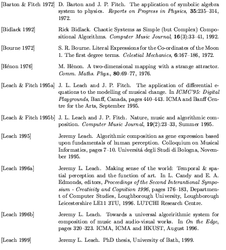
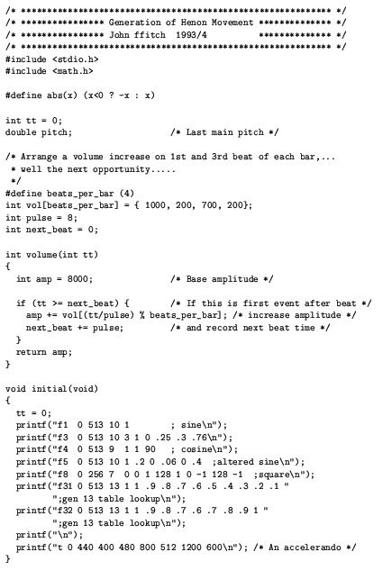
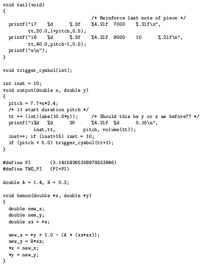
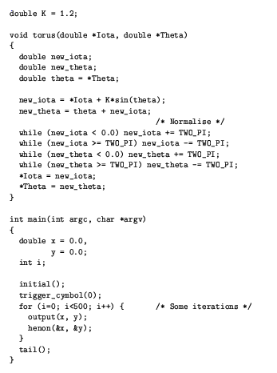
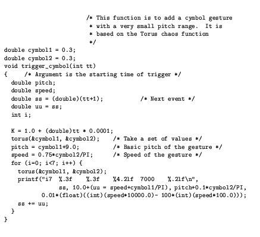